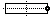

Offene Nut - CYCLE899 - Eingabe komplett
Parameter im Modus "Eingabe komplett"
Parameter G-Code Programm | | Parameter ShopMill-Programm |
|---|
Eingabe | |
PL  | Bearbeitungsebene | | | T | Werkzeugname | |
RP | Rückzugsebene | mm | D | Schneidennummer | |
SC | Sicherheitsabstand | mm | F | Vorschub | mm/min
mm/Zahn |
F | Vorschub | * | S / V | Spindeldrehzahl oder konstante Schnittgeschwindigkeit | U/min
m/min |
| | | | | | |
Parameter | Beschreibung | Einheit |
|---|
Bezugspunkt | Lage des Bezugspunkt: (linker Rand) (Mitte)  (rechter Rand) 
| |
Bearbeitung | | |
Technologie | | |
| | Fräsrichtung: - (außer Tauchfräsen) Gleichlauf Gegenlauf Gleichlauf-Gegenlauf
| |
Bearbeitungsposition | Einzelposition Eine Nut auf programmierter Position (X0, Y0, Z0) fräsen. Positionsmuster Mehrere Nuten auf einem programmierten Positionsmuster (z. B. Vollkreis oder Gitter) fräsen.
| |
X0 Y0 Z0 | Die Positionen beziehen sich auf den Bezugspunkt: Bezugspunkt X - (nur bei Einzelposition) Bezugspunkt Y - (nur bei Einzelposition) Bezugspunkt Z - (nur bei Einzelposition und G-Code Positionsmuster) | mm mm mm |
W | Breite der Nut | mm |
L | Länge der Nut | mm |
α0 | Drehwinkel der Nut | Grad |
Z1 | Nuttiefe (abs) oder Tiefe bezogen auf Z0 (abs) - (nur bei ∇, ∇∇∇, ∇∇∇ Boden und ∇∇∇ Vor) | mm |
DXY | - (nur bei ∇) | mm
% |
DZ | maximale Tiefenzustellung - (nur bei ∇, ∇∇∇ Vor, ∇∇∇ und ∇∇∇ Rand)
- (nur bei Wirbelfräsen) | mm |
UXY | Schlichtaufmaß Ebene (Nutrand) - (nur bei ∇, ∇∇∇ Vor und ∇∇∇ Boden) | mm |
UZ | Schlichtaufmaß Tiefe (Nutboden) - (nur bei ∇, ∇∇∇ Vor und ∇∇∇ Rand) | mm |
FS | Fasenbreite für Anfasen (ink) - (nur bei Anfasen) | mm |
ZFS | Eintauchtiefe Werkzeugspitze (abs oder ink) - (nur bei Anfasen) | mm |
* Einheit des Vorschubes wie vor Zyklusaufruf programmiert
Siehe auch:
Funktion CYCLE899
Bearbeitungsebene, Fräsrichtung, Rückzugsebene, Sicherheitsabstand und Vorschub (PL, RP, SC, F)
Werkzeug, Korrekturwert, Vorschub und Spindeldrehzahl (T, D, F, S, V)